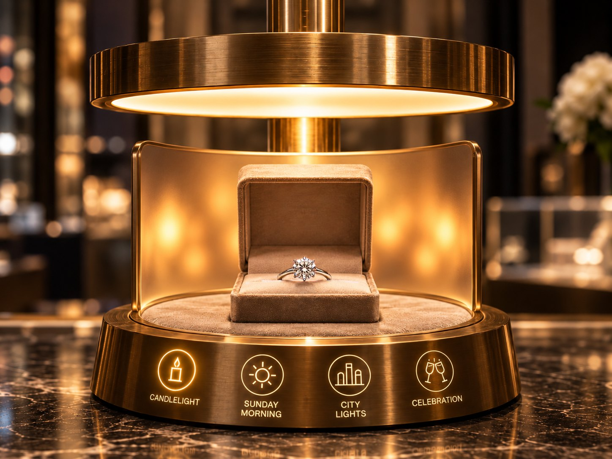
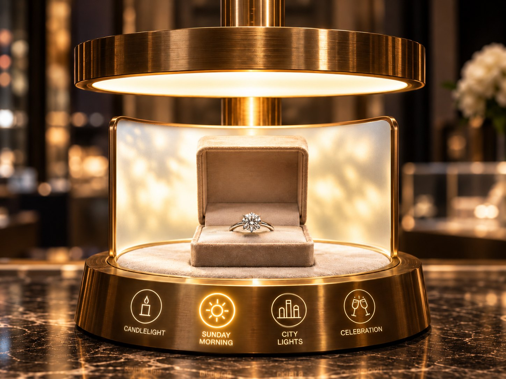
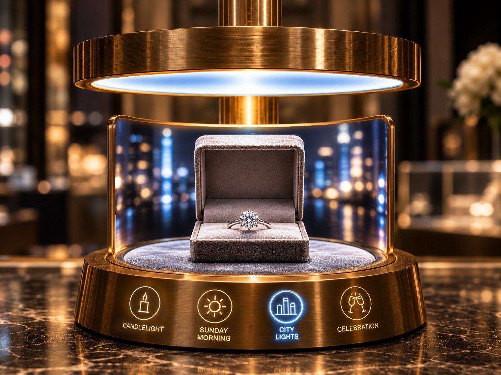
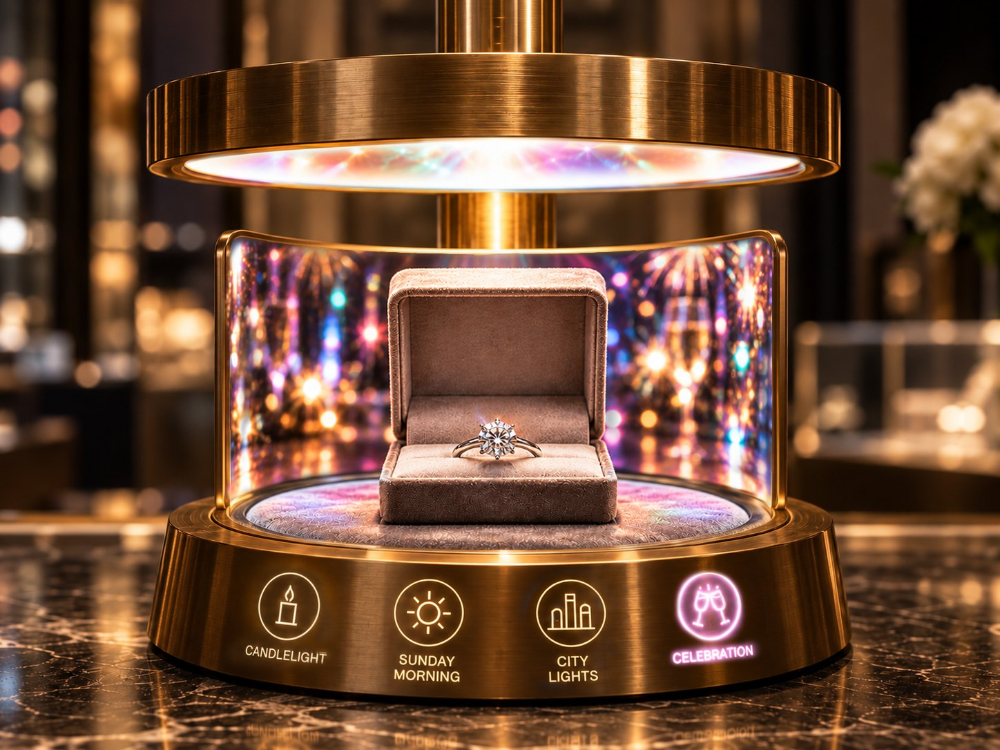
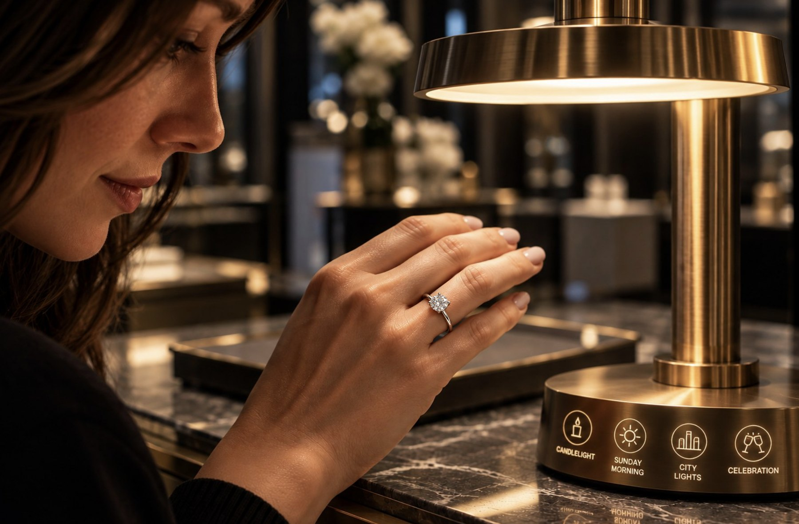

BROWN & CO.
Love looks different in every light.
From candlelight to city lights, discover the moments your diamond will become part of. Pitch work for Brown & Co. Jewelers, Buckhead | Roswell. Visuals AI-assisted.




The intimacy of two.
The Moments Lamp: a proposed in-store lighting experience. Tap a light on the lamp.
The insight
The insight
Jewelry is chosen under showroom lights. It's worn under every other kind.
The idea
Bring the lights of real life into the showroom.
The Lighting Bar
A diamond isn't just chosen for the moment you buy it. It's chosen for every moment that follows.
The Lighting Bar brings those moments into the store through the Moments Lamp, a proposed lighting experience inspired by candlelit dinners, quiet mornings, nights out, and celebrations.
One diamond. A lifetime of different lights.

Every light of the season
The season is full of lights that come and go. Some things stay with us long after they've been taken down.

Your name in lights
Some moments deserve more than candlelight. For the biggest question of all, Brown & Co. takes the experience beyond the showroom and into the Atlanta skyline.


As a proposed holiday promotion, Brown & Co. would invite engagement-ring customers to reserve a personal moment on a digital billboard above Buckhead.
A name. A question. A moment they'll remember every time they see the city lights.
Proposed mechanics
- Choose the ring.
- Reserve the moment.
- See your question in lights.
It begins under a lamp.
It ends under the city lights.
Brown & Co. Jewelers
Buckhead | Roswell